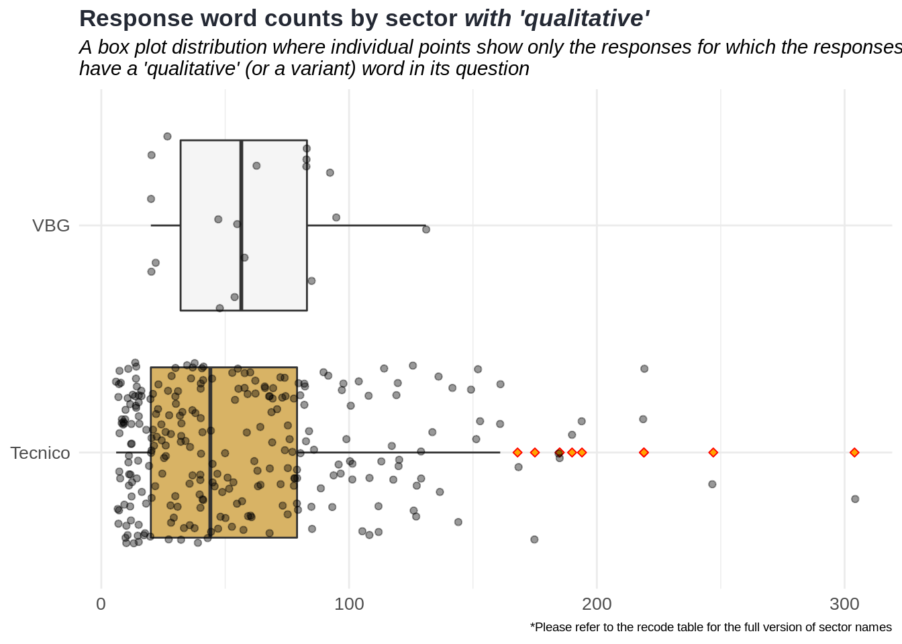
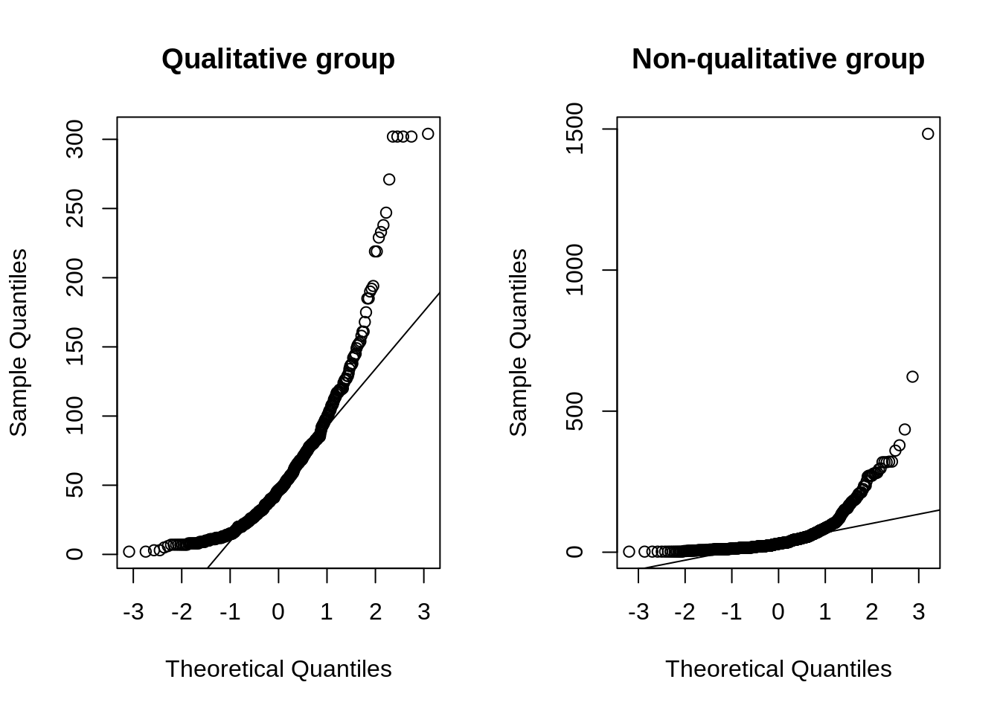
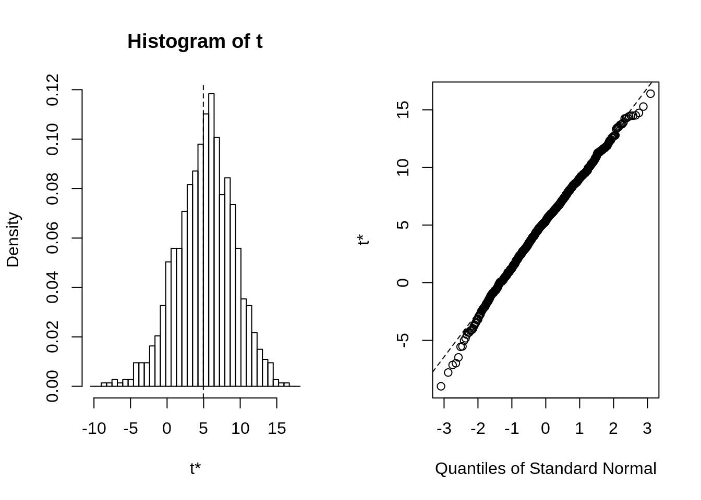

The “Qualitativo” questions
Do the responses have a question consisted of the word “qualitativo” lead to lesser word counts than the others?
Every response field in ActivityInfo forms has a question field. Particularly, in the Ecuador monitoring database, some responses have question field, which is only filled as one-word length “qualitative” or similar variants, and the other responses have different question fields, which seem to look like that they are formed as proper questions.
Let’s say that we are interested in that there are any meaningful differences between the word counts of these responses: one the one hand, the responses whose question field has “qualitative”, and on the other hand, the remaining responses.
The variants of “qualitative” term in the question fields are as follows: ‘Act_1_Cualitativo’, ‘Act_2_Cualitativo’, ‘Act_3_Cualitativo’, ‘Act_4_Cualitativo’, ‘Act_5_Cualitativo’, ‘Act_7_Cualitativo’, ‘cualitativo’, ‘Cualitativo’ and ‘Qualitative’
For this kind of analysis, we look at specific sectors such as VBG, Poblacion and Tecnico because of a couple of reasons. First, they have higher and similar sample sizes compared to the other sectors in the database. Second, their variances are similar. The rationale behind this choice is explained in the section.


Comparison of two groups by their means
After all, we have two groups (which they can also be called as random processes due to their distinct characteristics) that are from these sectors:
Qualitative group: Responses with which their questions have a ‘qualitative’ or a variant word.
Non-qualitative group: Responses with which their questions do not have any ‘qualitative’ or any variant words.
To begin with, we try to identify the underlying distribution of these groups:
In the histograms above, we can clearly see that the distribution in the first group looks less deviated than the distribution of the second one.
In addition to the histograms, we can generate the Q-Q (quantile-quantile) plots to assess from a different way whether the grouped data deviates from normal:

The first Q-Q plot shows that the deviations from the straight line are high. This should indicate that the data does not deviate from normal. The observations in the second plot are more aligned with its line.
Since the assumption of normality is violated in these random processes, we consider performing bootstrapping, which resamples the data with replacements so that the observations can be selected more than once, with 1000 samples. After that, we can use the bootstrapped data to calculate the confidence intervals.
After bootstrapping, the distribution of groups looks pretty normal:

We calculate the bootstrap confidence intervals at the confidence levels of 90, 95 and 99 in order to see the difference between the means in response word count of these groups.
## BOOTSTRAP CONFIDENCE INTERVAL CALCULATIONS
## Based on 1000 bootstrap replicates
##
## CALL :
## boot.ci(boot.out = results, conf = c(0.9, 0.95, 0.99), type = "bca")
##
## Intervals :
## Level BCa
## 90% (-3.091, 10.210 )
## 95% (-4.594, 11.434 )
## 99% (-8.679, 13.605 )
## Calculations and Intervals on Original Scale
## Some BCa intervals may be unstableAs a result, based on the resampled data, the difference in mean between those groups at 95% confidence level are in between -4.59 and 11.43. A crude interpretation of this would be that the mean interval does not show too much significance that the terms in the question fields do not affect the word count in the response fields. A further either quantiative or qualitative study is recommended.